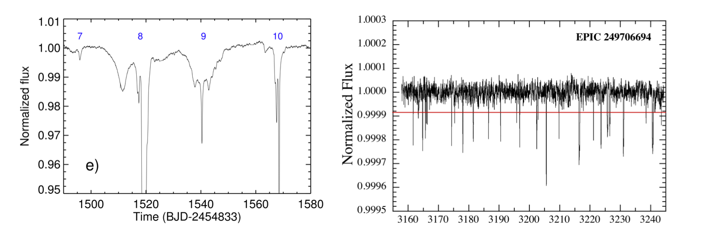

Welcome TESS followers to our latest news bulletin!
Before we highlight some of the more recent papers from the archive, we would like to introduce you to the newest member of our team -- Dr. Allison Youngblood, who will replace Dr. Tom Barclay as the new Deputy Project Scientist. We would like to thank Tom for serving TESS for many years, and look forward to continue working with him as a valued member of the TESS team.
Also, don't forget to follow TESS at the AAS 240 Summer meeting! There will be three events:
- Engaging the Public in Exoplanet Science Through the Legacy of TESS: Workshop - Saturday June 11th 12:30 – 5:00 PM PT in Room 102
- Future Science with TESS: Splinter Session - Monday June 13th 6:00 – 8:00 PM PT in Ballroom D
- The TESS Extended Mission: Hypwerwall talk - Monday 13th 9:22-9:34 AM PT in the Exhibit Hall at the NASA booth
Note that there will also be a TESS table in the exhibit hall, check out booths 806 and 707. See you there!
This week we are looking at three papers from the archive. Enjoy!
Weak evidence for variable occultation depth of 55 Cnc e with TESS (Meier Valdes et al., 2022) :
At V = 6 mag, 55 Cnc is one of the brightest stars hosting exoplanets. One of its exoplanets, 55 Cnc e, was discovered with the radial velocity method and later shown to be not only transiting its host star, but also being occulted by it. The planet has an orbital period of 0.73 days, radius of 2 R⊕, and mass of 8 M⊕. Interestingly, the occultation depth of 55 Cnc e changes significantly in the infrared. This paper confirms the detection of the occultations in TESS, reports an occultation depth in the TESS bandpass of 15+/-4 parts-per-million (ppm) in Sector 21, 8+/-5 ppm in Sector 46. The Meier Valdes et al. detect no occultation in Sector 44 and present weak evidence for variable occultation depth in TESS data. The measured transit depths do not vary between the different sectors. The authors note that the process causing the variable occultation depth is still unknown, and suggest an upper limit of 0.4 on the geometric albedo.
The Visual Survey Group: A Decade of Hunting Exoplanets and Unusual Stellar Events with Space-Based Telescopes (Kristiansen et al., 2022) :
Professional and amateurs astronomers have been collaborating for centuries. Over the past two decades, large-scale efforts have involved the participation of millions of citizen-scientists in projects ranging from astronomy to zoology, and everything in-between. This paper presents the Visual Survey Group (VSG) -- a dedicated team focused on analyzing data from Kepler, K2 and TESS. Over the past decade, the group has visually surveyed nearly 10 million lightcurves and authored 72 papers on the discovery and characterization of transiting exoplanets, eclipsing binary stars, multistellar systems, variable stars, rare events, etc. Amongst the highlights of the VSG contributions are several multiplanet systems, circumbinary planets, planets in young star clusters, random transmitters, KIC 8462852, potential exocomet transits, etc. The authors note that they are open to new collaborations and invite other researches to join the VSG.
Galactic Kinematics and Observed Flare Rates of a Volume-Complete Sample of Mid-to-Late M-dwarfs: Constraints on the History of the Stellar Radiation Environment of Planets Orbiting Low-mass Stars (Medina et. al., 2022) :
Main-sequence stars display two regimes of magnetic activity: a saturated regime independent of the rotation period up to a critical value, and an unsaturated regime where the activity decreases as the rotation period increases. The corresponding physical mechanisms and age-dependence are currently not firmly-established. This paper presents a study of the relationship between magnetic activity, kinematic age, and rotation rates of fully-convective M-dwarfs within 15 parsecs. Medina et al. combine TESS photometry, spectroscopic observations from TRES and CHIRON, and galactic velocities to show that their target sample exhibit a common power-law exponent for flare frequency distribution of alpha = 1.984+/-0.019, consistent with previous studies of a smaller sampler. Assuming constant star formation in the thin disk over the past 8 Gyr, the authors estimate that the stars in their sample transition between the saturated and unsaturated flaring regime at an average age of 2.4 Gyr. This would have important implications for the atmospheres of planets orbiting these stars.
Fig. 1: Taken from Meier-Valdes et. al., (2022). Phase-folded TESS data of 55 Cnc e for Sectors 21 (left), 44 (middle), and 46 (right). Small symbols represent retreaded flux, large symbols represent binned data with the corresponding uncertainty.

Fig. 2: Taken from Kristiansen al., (2022). Some highlights of the Visual Survey Group results. The left panel shows the mysterious dips of KIC 8462852. The right panel shows 28 dips of the random transiter EPIC 249706694.
Fig. 3: Taken from Medina et. al., (2022). Number of flares per day (on a log scale) as a function of the rotation period (left panel) and Rossby number (right panel). Purple symbols represent star observed by TESS in the Southern Hemisphere, teal points represents stars observed by TESS in the northern hemisphere; red symbols represent stars with known transiting planets.